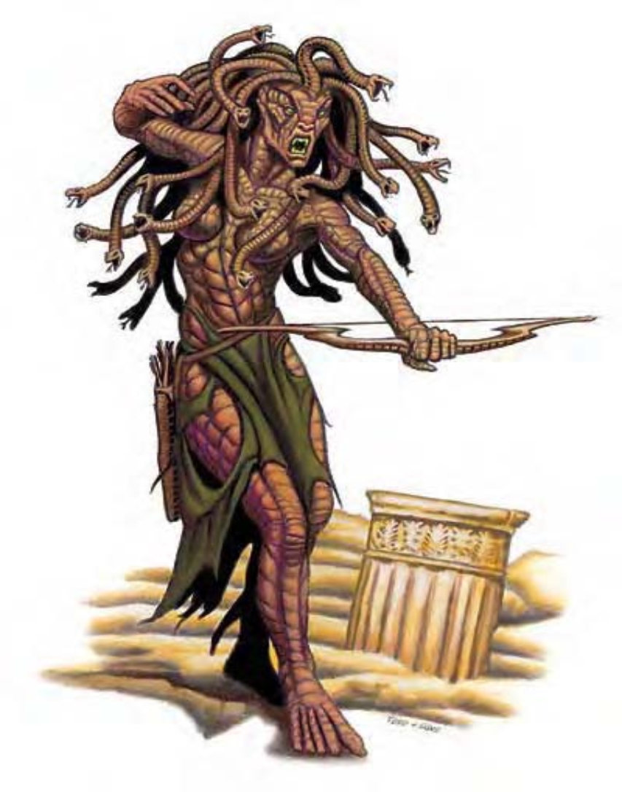

虽然第一眼看起来是个体态匀称的人类，但仔细观察将发现这种生物有张丑恶的脸，原本该是头发的地方却长着一堆扭动、发出嘶嘶声的毒蛇，他野兽般的眼睛呈深红色，土黄色的皮肤布满鳞片。
梅杜莎是一种令人憎恶的恶心生物，其凝视可将活物石化。梅杜莎喜欢艺术品、昂贵的珠宝或宝藏，其活动目的也常是为了收集这些物品。
梅杜莎距离30英尺外时看起来与一般人类无异，若遮盖脸部则靠近也看不出来。他们常穿着可彰显其人类身体的衣物，却以兜帽或面纱遮盖脸部。
梅杜莎可能在任何环境出没。有些住在大城市里，通过犯罪活动获得渴求的珍宝。有些梅杜莎会组织强盗或走私集团。
一般的梅杜莎身高5至6英尺，体重与人类相仿。
梅杜莎通晓通用语。
| 资料栏位 | 梅杜莎 (Medusa) 中型人形怪物 |
| 生命骰 | 6d8+6 (33HP) |
| 先攻 | +2 |
| 速度 | 30英尺 (6格) |
| 防御等级 | 15 (+2敏捷、+3天生)、接触12、措手不及13 |
| 基本攻击/擒抱 | +6 / +6 |
| 攻击 | 短弓+8远程 (1d6 / ×3)；或匕首+8近战 (1d4 / 19-20)；或蛇发+8近战 (1d4附加毒素) |
| 全力攻击 | 短弓+8 / +3远程 (1d6 / ×3)；或匕首+8 / +3近战 (1d4 / 19-20) 及蛇发+3近战 (1d4附加毒素) |
| 占据/触及 | 5英尺 / 5英尺 |
| 特殊攻击 | 石化凝视、毒素 |
| 特殊能力 | 黑暗视觉60英尺 |
| 豁免 | 强韧+3、反射+7、意志+6 |
| 属性 | 力量10、敏捷15、体质12、智力12、感知13、魅力15 |
| 技能 | 唬骗+9、交涉+4、易容+9 (扮演+11)、威吓+4、潜行+8、侦察+8 |
| 专长 | 近程射击、精准射击、武器娴熟 |
| 环境 | 温带沼泽 |
| 组织 | 单独或巫妪会 (2-4) |
| 宝藏 | 双倍标准 |
| 阵营 | 通常守序邪恶 |
| 进化 | 视人物职业而定 |
| 等级修正值 | ― |
梅杜莎会先以掩饰自己，以欺骗、哄骗等方式使受害者放松戒心，诱骗其进入石化凝视的有效距离。梅杜莎会用一般武器攻击将目光移开或对石化凝视免疫的人，邻近敌人则以毒蛇啮咬攻击。
石化凝视 (超自然)：永久变成石头，距离30英尺。通过强韧检定 (DC=15) 则无效。豁免检定DC的调整值与魅力调整值相同。
毒素 (特异)：每次造成伤害后，梅杜莎就会注入毒素 (强韧检定的DC=14)。初始伤害为1d6点力量伤害，后续伤害为2d6点力量伤害。豁免检定DC的调整值与体质调整值相同。